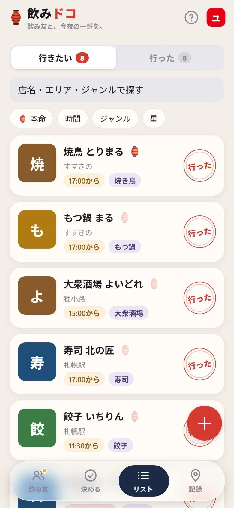
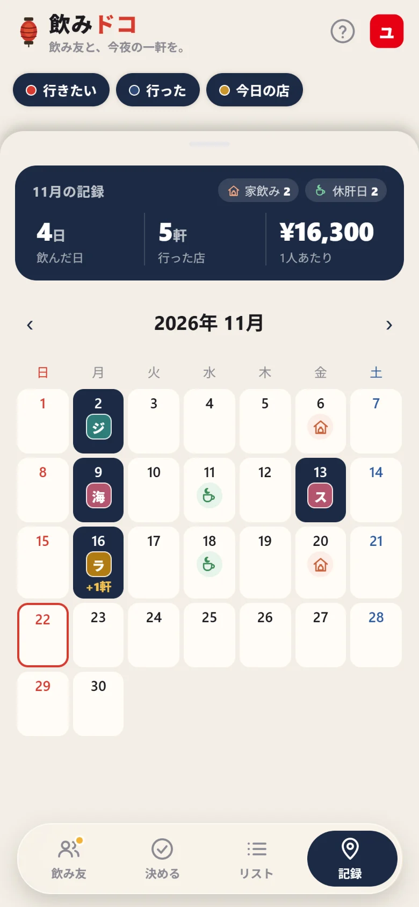
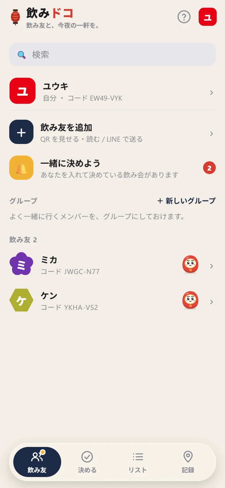

あるある
こんなこと、ありませんか?
「今度行こう」の店を、いざという時に思い出せない
LINE で「どこにする?」が流れて、まとまらない
お店選びが、なかなか決まらない
店選びを、いつも自分ひとりで背負っている
前に行ったあの店、なんて名前だっけ…
今月どれだけ飲んだか、分からない
飲みドコなら、みんなの「行きたい」を持ち寄って、
みんなで決められます。
しくみはかんたん
ためて、出して、決める。
- 1
ためる
気になった店を「行きたい」へ。お店の名前やエリアで探せて、リンクを貼るだけでも入ります。
- 2
出す
飲みたくなったら、誰と行くかを選んで候補を出す。営業中の店や本命から選べます。
- 3
決める
飲み友の候補も一緒に並んで、賛成が集まった店に決定。行ったら記録が残ります。
できること
決めるところから、ふり返りまで。
決める
誰と行く? から始まる
1人でも、いつものメンバーとでも。選んだ人の「行きたい」をまとめて、今日の候補にします。明日の店、週末の店も前もって決められます。
- 家飲み・休肝日も1タップで記録
- 届いた誘いは、ここでひと目でわかる
候補
賛成が集まった店に決まる
みんなの候補が1つの画面に並びます。賛成を押して、集まったら決定。迷ったらルーレットに任せても。
- 候補は LINE でそのまま送れる
- みんなが行きたい店は金色で目立つ

リスト
行きたい・行った を、ひとつに
行きたい店には営業時間が出るので、今から行けるかがすぐわかります。行った店には星や本命・定番、メモを残せます。
- ホットペッパーグルメから探して追加
- 時間・ジャンル・星で絞り込み

記録
飲んだ夜が、カレンダーと地図に
行った日と店がカレンダーに並び、月ごとの回数や会計もまとまります。地図では、行った店・行きたい店をピンでふり返れます。

飲み友
QR や LINE で、すぐつながる
目の前の人とは QR コードで、離れた人とは LINE で。よく行くメンバーはグループにしておけば、誘うのも一瞬です。
相棒は、だるま。
ホーム画面でひとこと話しかけてくれる、あなた専用のだるま。色や柄、顔を選んで、自分好みに仕立てられます。飲み友の一覧にも、それぞれのだるまが並びます。
見せるものは、自分で決められる
見える行きたい・行った店 / 今日の候補 / 名前・アイコン / だるま
見えない星 / 本命・定番 / メモ / 来店記録 / 会計
飲み友に見えるのは、あなたが承認した相手だけ。名前だけで入れた店を見せない設定もあります。くわしくはプライバシーポリシーへ。
今夜、どこ行く?
飲みドコは、App Store での公開に向けて準備中です。
サポート・お問い合わせお店の検索に ホットペッパーグルメ Webサービス を利用しています。